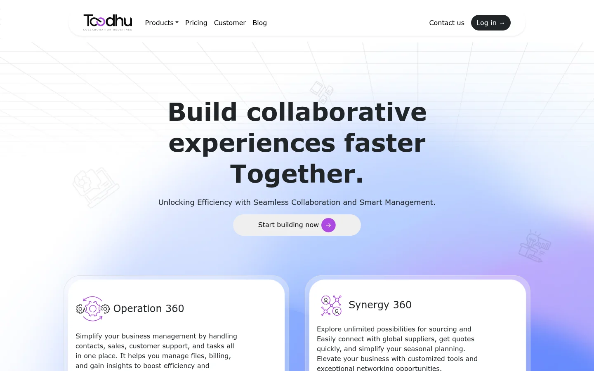
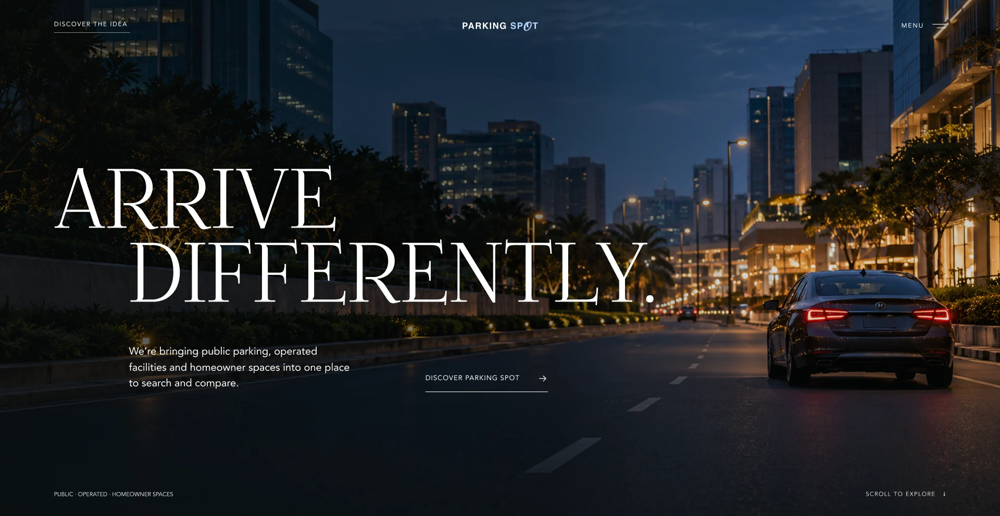

01 / FEATURED
01 / FEATUREDAPPAREL ERP / WEBSITE · Professional work
Website designer; ERP UI contributorFITTEX
A public website designed from end to end, alongside selected new and redesigned interfaces in an existing ERP.
I design useful digital experiences for business software, marketplaces, and the web—then bring the details to life in the browser.
What I made, how I contributed, and what the work can honestly show.
01 / FEATUREDA public website designed from end to end, alongside selected new and redesigned interfaces in an existing ERP.
 02 / FEATURED
02 / FEATUREDCollaborative interface design for a uniforms and linens business network.
Sole UI/UX design, interactive prototyping, and frontend implementation for a company project in testing.

04 / FEATUREDCollaborative design work on interfaces for business management and teamwork.
Earlier professional work and an independent concept
 05 / MORE WORK
05 / MORE WORKResponsive website redesign focused on page structure and product communication.

06 / MORE WORKA parking app concept introduced through a responsive website; the app remains planned.
 AAKASH P / PRODUCT DESIGNER
AAKASH P / PRODUCT DESIGNERI’m Aakash, a product designer based in Coimbatore. I work across responsive websites, B2B products, and business software, with an eye for structure, interaction, and the details that make an interface usable.
My BCA background helps me collaborate with developers and carry ideas into frontend implementation. I work with Figma, components, prototypes, HTML, and CSS; I also create visual communication assets such as posters and presentations.
Download résuméA practical toolkit for turning complicated tasks into clear interfaces.
Flows, information hierarchy, wireframes, and prototypes that clarify the task.
Figma components, auto layout, responsive layouts, and interaction states.
HTML, CSS, and JavaScript fundamentals for implementation and collaboration.
Posters, presentations, and digital graphics that make ideas easier to share.
BCA · KG College of Arts and Science
UI/UX Professional Course · FITA Academy
Responsive websites, selected ERP interfaces, collaborative B2B product design, and NutaLink design and frontend implementation.
Responsive website design, content hierarchy, and supporting visual communication.
Web and app interfaces, wireframes, user flows, prototypes, and developer collaboration.